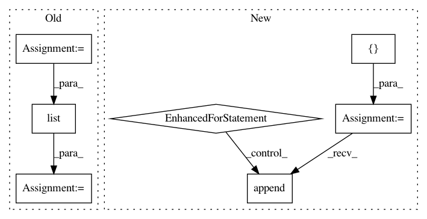

1a6d4020c53e2b39e224616481528fad901cbd4e,deeppavlov/core/commands/infer.py,,predict_on_stream,#Any#Any#Any#,116
Before Change
while True:
batch = (l.strip() for l in islice(f, batch_size*args_count))
if args_count > 1:
batch = zip(*[batch]*args_count)
batch = list(batch)
if not batch:
break
After Change
if not batch:
break
args = []
for i in range(args_count):
args.append(batch[i::args_count])
res = model(*args)
if len(model.out_params) == 1:
res = [res]
for res in zip(*res):
In pattern: SUPERPATTERN
Frequency: 3
Non-data size: 7
Instances
Project Name: deepmipt/DeepPavlov
Commit Name: 1a6d4020c53e2b39e224616481528fad901cbd4e
Time: 2018-10-15
Author: yoptar@gmail.com
File Name: deeppavlov/core/commands/infer.py
Class Name:
Method Name: predict_on_stream
Project Name: OpenNMT/OpenNMT-py
Commit Name: 68fbfd1876c367323acf830736bae1af499cc0fe
Time: 2018-03-07
Author: dengyuntian@gmail.com
File Name: onmt/io/TextDataset.py
Class Name: TextDataset
Method Name: __init__
Project Name: keras-team/keras
Commit Name: 555ca942df407b8c1bf1d48383c60fa1bf09cc1d
Time: 2019-08-28
Author: francois.chollet@gmail.com
File Name: keras/engine/network.py
Class Name: Network
Method Name: losses